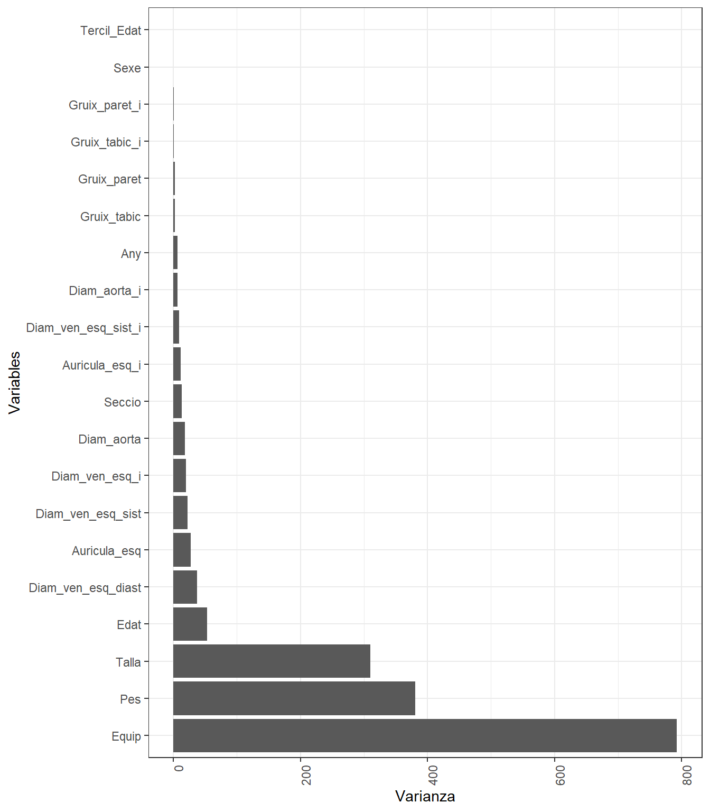

Capítol 6 Visualizació de dades longitudinals
Podem agafar la referencia la variable temporal Edat dels individus. Tenim un gran número d’individus en cada dataframe, pero per fer una representació longitudinal han d’apareixer dos cops diferents al llarg del temps.
[1] 4170[1] 1202[1] 1250[1] 868En el dataframe de ecocardiogrames, de 4170 individus, només 1202 s’han fet més d’un cop la prova. D’igual manera, per la base de dades de densitometries, de 1250 tenim 868
Visualització longitudinal agregades de variables de densitometria i ecocardiograma:
dfpreeco9 <- dfpreeco %>%
group_by(Id) %>%
summarise(n = n()) %>%
filter(n==9)
dfpreeco9 <- dfpreeco %>%
filter(Id %in% dfpreeco9$Id)
ggplot(dfpreeco9, aes(x = Edat, y = Pes, color= Sexe)) +
geom_point() +
stat_smooth(method = "loess", se = FALSE, span = .9) +
facet_wrap(~Id)
ggplot(dfpreeco %>% filter(Edat>10, Edat<30), aes_string(x = "Edat", y = "Pes", group = "Id", color="Sexe")) +
geom_line(alpha =0.5)+
geom_point(size=0.05, alpha =0.6, col="grey")+
facet_wrap(~Sexe)+
guides(color = FALSE) PROBLEMA:
4 individus només amb 9 proves, la majoria curtes i tallades
De fet 2 proves és un número molt baix, per representar-ho millor gràficament utilitzarem els individus que se l’haguin fet minim 5 cops les proves.
PROBLEMA:
4 individus només amb 9 proves, la majoria curtes i tallades
De fet 2 proves és un número molt baix, per representar-ho millor gràficament utilitzarem els individus que se l’haguin fet minim 5 cops les proves.
Utilitzarem spaghetti plot, ja que tenim forces indivius així podrem visualitzar la trajectoria de tots ells en una única gràfia. Dividirem la gràfica entre homes i dones, entre edats i entre secció. Afegirem el promig.
library(patchwork)
diam_names <- dfpreeco %>% dplyr::select(starts_with("Gruix")) %>% names()
kfg_names <- dfpredensi %>% dplyr::select(ends_with("kfg")) %>% dplyr::select(starts_with("T")) %>% names()
longplot <- function(var, df) {
df$EdatAnys <- round(df$Edat)
ggplot(df %>% filter(df$Edat<60), aes_string(x = "EdatAnys", y = var, group = "Id", color="Sexe")) +
geom_line(alpha =0.5, col="gray" )+
geom_point(size=0.05, alpha =0.2)+
stat_summary(aes(group = 1), geom = "line", fun = mean, size=2)+
facet_wrap(~Sexe)+
guides(color = FALSE)
}
plotdiamlong <- lapply(diam_names, function(var) {longplot(var, df = dfpreeco)})
plotkfglong <- lapply(kfg_names, function(var) {longplot(var, df = dfpredensi)})
wrap_plots(plotdiamlong, ncol = 2) 
Figure 6.1: Visualització longitudinal agregada diametres ecocardiograma
Figure 6.2: Visualització longitudinal agregada diametres ecocardiograma
DUBTE, Aquest document ho explica molt bé: https://bookdown.org/cjrinconr/adl2019/ADL2019.pdf Entre los retos que presenta este tipo de análisis, se encuentran: 1. Requieren de métodos que consideren la correlación de las observaciones, siendo estos generalmente más complejos y computacionalmente más demandantes. 2. Riesgo de presentar datos faltantes ya sea porque no se obtuvieron todas las mediciones programadas en un sujeto, o por abandonos o retiros del estudio antes de finalizar el seguimiento programado. 3. Debido a la necesidad de recolección de información en distintos momentos, no solo del desenlace sino en ocasiones también de los factores de interés, se requiere de diseños de investigación que generan un mayor costo y complejidad operativa. 4. Se debe considerar, en el caso de estudios experimentales donde se aplican varias intervenciones al mismo sujeto, el orden en que estas son aplicadas. Lo anterior ya que de esto puede depender el resultado de la relación que se está evaluando.